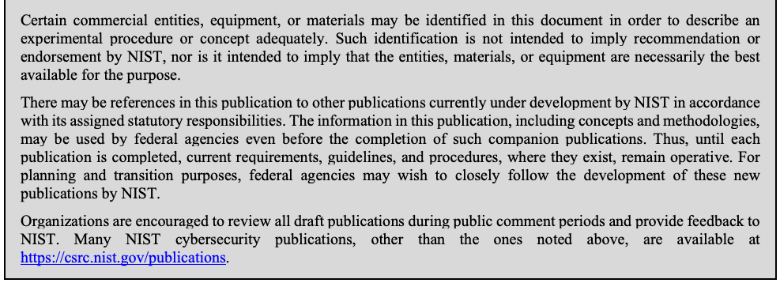

NIST Special Publication · PDF 原文抽出
CMVP Documentation Requirements: CMVP Validation Authority Updates to ISO/IEC 24759
CMVP文書化要件
NIST SP 800-140A（CMVP Documentation Requirements: CMVP Validation Authority Updates to ISO/IEC 24759）の英文と日本語訳を段落ごとに並べた閲覧用ページです。ISO/IEC 19790附属書AおよびISO/IEC 24759 6.13項に対する、ベンダー証拠と試験証拠の文書化要件を示します。 翻訳は非公式です。要件の確認にはNIST の正式版 PDFを参照してください。
PDF から抽出した原文は原本との照合待ちです。
NIST Special Publication 800-140A
NIST特別刊行物 800-140A
未レビュー訳CMVP Documentation Requirements:
CMVP文書化要件：
未レビュー訳CMVP Validation Authority Updates to ISO/IEC 24759
ISO/IEC 24759に対するCMVP検証機関の更新
未レビュー訳Kim Schaffer
Kim Schaffer
未レビュー訳This publication is available free of charge from: https://doi.org/10.6028/NIST.SP.800-140A
本刊行物は次から無料で入手できます：https://doi.org/10.6028/NIST.SP.800-140A
未レビュー訳I N F O R M A T I O N S E C U R I T Y
情 報 セ キ ュ リ テ ィ
未レビュー訳NIST Special Publication 800-140A
NIST特別刊行物 800-140A
未レビュー訳CMVP Documentation Requirements:
CMVP文書化要件：
未レビュー訳CMVP Validation Authority Updates to ISO/IEC 24759
ISO/IEC 24759に対するCMVP検証機関の更新
未レビュー訳Kim Schaffer
Kim Schaffer
未レビュー訳Computer Security Division Information Technology Laboratory
コンピュータセキュリティ部門 情報技術研究所
未レビュー訳This publication is available free of charge from: https://doi.org/10.6028/NIST.SP.800-140A
本刊行物は次から無料で入手できます：https://doi.org/10.6028/NIST.SP.800-140A
未レビュー訳March 2020
2020年3月
未レビュー訳
PDF原本のp.2にある図
U.S. Department of Commerce Wilbur L. Ross, Jr., Secretary
米国商務省 Wilbur L. Ross, Jr. 長官
未レビュー訳National Institute of Standards and Technology
米国国立標準技術研究所
未レビュー訳Walter Copan, NIST Director and Under Secretary for Standards and Technology
Walter Copan、NIST所長兼標準技術担当商務次官
未レビュー訳Authority
権限
未レビュー訳This publication has been developed by NIST in accordance with its statutory responsibilities under the Federal Information Security Modernization Act (FISMA) of 2014, 44 U.S.C. § 3551 et seq., Public Law (P.L.) 113-283. NIST is responsible for developing information security standards and guidelines, including minimum requirements for federal information systems, but such standards and guidelines shall not apply to national security systems without the express approval of appropriate federal officials exercising policy authority over such systems. This guideline is consistent with the requirements of the Office of Management and Budget (OMB) Circular A-130.
本刊行物は、2014年連邦情報セキュリティ近代化法（FISMA）、44 U.S.C. § 3551 et seq.、公法（P.L.）113-283に基づく法定責任に従ってNISTが策定した。NISTは、連邦情報システムの最低要件を含む情報セキュリティ標準およびガイドラインを策定する責任を負う。ただし、当該システムについて政策権限を行使する適切な連邦職員の明示的な承認がない限り、これらの標準およびガイドラインは国家安全保障システムには適用されない。本ガイドラインは行政管理予算局（OMB）通達A-130の要件に適合している。
未レビュー訳Nothing in this publication should be taken to contradict the standards and guidelines made mandatory and binding on federal agencies by the Secretary of Commerce under statutory authority. Nor should these guidelines be interpreted as altering or superseding the existing authorities of the Secretary of Commerce, Director of the OMB, or any other federal official. This publication may be used by nongovernmental organizations on a voluntary basis and is not subject to copyright in the United States. Attribution would, however, be appreciated by NIST.
本刊行物のいかなる内容も、法定権限に基づき商務長官が連邦機関に義務付け、拘束力を持たせた標準およびガイドラインに反するものと解釈してはならない。また、本ガイドラインを、商務長官、OMB長官、その他の連邦職員が有する既存の権限を変更または置き換えるものと解釈してはならない。本刊行物は非政府組織が任意に利用でき、米国内では著作権の対象ではない。ただし、NISTへの帰属表示を歓迎する。
未レビュー訳National Institute of Standards and Technology Special Publication 800-140A Natl. Inst. Stand. Technol. Spec. Publ. 800-140A, 8 pages (March 2020) CODEN: NSPUE2
国立標準技術研究所 特別刊行物800-140A、Natl. Inst. Stand. Technol. Spec. Publ. 800-140A、8ページ（2020年3月）CODEN: NSPUE2
未レビュー訳This publication is available free of charge from: https://doi.org/10.6028/NIST.SP.800-140A
本刊行物は次から無料で入手できます：https://doi.org/10.6028/NIST.SP.800-140A
未レビュー訳原本の表画像

Comments on this publication may be submitted to:
本刊行物へのコメントは次の宛先に提出できます：
未レビュー訳National Institute of Standards and Technology Attn: Computer Security Division, Information Technology Laboratory 100 Bureau Drive (Mail Stop 8930) Gaithersburg, MD 20899-8930 Email: sp800-140-comments@nist.gov
米国国立標準技術研究所 宛先：情報技術研究所 コンピュータセキュリティ部門 100 Bureau Drive（Mail Stop 8930）Gaithersburg, MD 20899-8930 電子メール：sp800-140-comments@nist.gov
未レビュー訳All comments are subject to release under the Freedom of Information Act (FOIA).
すべてのコメントは情報公開法（FOIA）に基づく公開の対象となる。
未レビュー訳Reports on Computer Systems Technology
コンピュータシステム技術に関する報告書
未レビュー訳The Information Technology Laboratory (ITL) at the National Institute of Standards and Technology (NIST) promotes the U.S. economy and public welfare by providing technical leadership for the Nation’s measurement and standards infrastructure. ITL develops tests, test methods, reference data, proof of concept implementations, and technical analyses to advance the development and productive use of information technology. ITL’s responsibilities include the development of management, administrative, technical, and physical standards and guidelines for the cost-effective security and privacy of other than national security-related information in federal information systems. The Special Publication 800-series reports on ITL’s research, guidelines, and outreach efforts in information system security, and its collaborative activities with industry, government, and academic organizations.
国立標準技術研究所（NIST）の情報技術研究所（ITL）は、米国の計測・標準インフラに対する技術的リーダーシップを提供し、米国経済と公共の福祉を促進している。ITLは、情報技術の発展と有効活用を推進するため、試験、試験方法、参照データ、概念実証の実装、および技術分析を開発している。ITLは、連邦情報システムにおける国家安全保障関連以外の情報を費用対効果よく保護し、プライバシーを確保するための管理、運用、技術および物理的な標準とガイドラインの開発を担う。特別刊行物800シリーズは、情報システムセキュリティに関するITLの研究、ガイドライン、普及活動、および産業界、政府、学術機関との協働活動を報告する。
未レビュー訳Abstract
要約
未レビュー訳NIST Special Publication (SP) 800-140A modifies the vendor documentation requirements of ISO/IEC 19790 Annex A. As a validation authority, the Cryptographic Module Validation Program (CMVP) may modify, add, or delete Vendor Evidence (VE) and/or Test Evidence (TE) as specified under paragraph 5.2 of the ISO/IEC 19790. This document should be used in conjunction with ISO/IEC 19790 Annex A and ISO/IEC 24759 paragraph 6.13 as it modifies only those requirements identified in this document.
NIST特別刊行物（SP）800-140Aは、ISO/IEC 19790附属書Aのベンダー文書要件を変更する。検証機関として、暗号モジュール検証プログラム（CMVP）は、ISO/IEC 19790の5.2項に従い、ベンダー証拠（VE）および／または試験証拠（TE）を変更、追加または削除できる。本書は、ここで特定した要件のみを変更するため、ISO/IEC 19790附属書AおよびISO/IEC 24759の6.13項と併用する。
未レビュー訳Keywords
キーワード
未レビュー訳Conformance testing; Cryptographic Module Validation Program; CMVP; FIPS 140 testing; FIPS 140; ISO/IEC 19790; ISO/IEC 24759 testing requirement; vendor evidence; vendor documentation.
適合性試験；暗号モジュール検証プログラム；CMVP；FIPS 140試験；FIPS 140；ISO/IEC 19790；ISO/IEC 24759試験要件；ベンダー証拠；ベンダー文書。
未レビュー訳Audience
対象読者
未レビュー訳This document is focused toward the vendors, testing labs, and CMVP for the purpose of addressing issues in ISO/IEC 24759, Test requirements for cryptographic modules.
本書は、ISO/IEC 24759「暗号モジュールの試験要件」に関する課題に対処することを目的として、ベンダー、試験機関、およびCMVPを対象とする。
未レビュー訳Table of Contents
目次
未レビュー訳1 Scope — 1
1 適用範囲 — 1
未レビュー訳2 Normative references — 1
2 規範参照 — 1
未レビュー訳3 Terms and definitions — 1
3 用語および定義 — 1
未レビュー訳4 Symbols and abbreviated terms — 1
4 記号および略語 — 1
未レビュー訳5 Document organization — 2
5 文書の構成 — 2
未レビュー訳5.1 General — 2
5.1 一般 — 2
未レビュー訳5.2 Modifications — 2
5.2 変更 — 2
未レビュー訳6 Security requirements — 2
6 セキュリティ要件 — 2
未レビュー訳6.1 Documentation requirements — 2
6.1 文書化要件 — 2
未レビュー訳1 Scope
1 適用範囲
未レビュー訳Federal Information Processing Standard (FIPS) 140-3 documentation requirements are specified in ISO/IEC 19790. This document specifies any additional requirements specified by the Cryptographic Module Validation Program (CMVP) for evidence that vendors provide to a Cryptographic and Security Testing Laboratory (CSTL) to demonstrate conformity. Unless otherwise modified in this document, the test requirements are specified in ISO/IEC 24759.
連邦情報処理標準（FIPS）140-3の文書化要件はISO/IEC 19790に規定されている。本書は、適合性を実証するためにベンダーが暗号・セキュリティ試験機関（CSTL）へ提出する証拠について、暗号モジュール検証プログラム（CMVP）が定める追加要件を規定する。本書で別途変更されない限り、試験要件はISO/IEC 24759に規定される。
未レビュー訳2 Normative references
2 規範参照
未レビュー訳This section identifies the normative references cited as ISO/IEC 19790 and ISO/IEC 24759. The specific editions to be used are ISO/IEC 19790:2012 and ISO/IEC 24759:2017. Please note that the version 19790:2012 referenced here includes the corrections made in 2015.
本節では、ISO/IEC 19790およびISO/IEC 24759として引用される規範参照を示す。使用する版はISO/IEC 19790:2012およびISO/IEC 24759:2017である。ここで参照する19790:2012の版には、2015年に行われた正誤訂正が含まれることに留意する。
未レビュー訳National Institute of Standards and Technology (2019) Security Requirements for Cryptographic Modules. (U.S. Department of Commerce, Washington, DC), Federal Information Processing Standards Publication (FIPS) 140-3. https://doi.org/10.6028/NIST.FIPS.140-3
国立標準技術研究所（2019）「暗号モジュールのセキュリティ要件」。（米国商務省、ワシントンD.C.）、連邦情報処理標準刊行物（FIPS）140-3。https://doi.org/10.6028/NIST.FIPS.140-3
未レビュー訳3 Terms and definitions
3 用語および定義
未レビュー訳The following terms and definitions supersede or are in addition to ISO/IEC 19790 and ISO/IEC 24759.
以下の用語および定義は、ISO/IEC 19790およびISO/IEC 24759の内容に優先するか、それらに追加される。
未レビュー訳No additional terms at this time.
現時点で追加用語はない。
未レビュー訳4 Symbols and abbreviated terms
4 記号および略語
未レビュー訳The following symbols and abbreviated terms supersede or are in addition to ISO/IEC 19790 and ISO/IEC 24759 throughout this document:
以下の記号および略語は、本書全体を通じてISO/IEC 19790およびISO/IEC 24759の内容に優先するか、それらに追加される：
未レビュー訳CCCS
CCCS
未レビュー訳Canadian Centre for Cyber Security
カナダ・サイバーセキュリティセンター
未レビュー訳CMVP
CMVP
未レビュー訳Cryptographic Module Validation Program
暗号モジュール検証プログラム
未レビュー訳CSD
CSD
未レビュー訳Computer Security Division
コンピュータセキュリティ部門
未レビュー訳CSTL
CSTL
未レビュー訳Cryptographic and Security Testing Laboratory
暗号・セキュリティ試験機関
未レビュー訳FIPS
FIPS
未レビュー訳Federal Information Processing Standard
連邦情報処理標準
未レビュー訳FISMA
FISMA
未レビュー訳Federal Information Security Management/Modernization Act
連邦情報セキュリティ管理法／近代化法
未レビュー訳NIST
NIST
未レビュー訳National Institute of Standards and Technology
国立標準技術研究所
未レビュー訳原文のみ
SP 800-XXX NIST Special Publication 800 series document
SP 800-XXX NIST特別刊行物800シリーズ文書
未レビュー訳5 Document organization
5 文書の構成
未レビュー訳5.1 General
5.1 一般
未レビュー訳Section 6 of this document specifies any modifications to the minimum information that vendors shall provide to testing laboratories as specified in Annex A of ISO/IEC 19790. Section 6 also addresses any modifications to 6.13 A – Documentation requirements of ISO/IEC 24759.
本書の第6節は、ISO/IEC 19790附属書Aに規定される、ベンダーが試験機関に提供しなければならない最低限の情報に対する変更を規定する。また第6節では、ISO/IEC 24759の6.13 A「文書化要件」に対する変更も扱う。
未レビュー訳5.2 Modifications
5.2 変更
未レビュー訳Modifications will follow a similar format as in ISO/IEC 24759. For additions to vendor-supplied documentation, requirements will be listed by increasing the “sequence_number.” Modifications can include a combination of additions using underline and deletions using strikethrough. If no changes are required, the paragraph will indicate “No change.”
変更はISO/IEC 24759と同様の形式に従う。ベンダー提供文書への追加については、「sequence_number」を増加させて要件を列挙する。変更には、下線による追加と取り消し線による削除の組み合わせを含めてもよい。変更が不要な場合は、該当段落に「変更なし」と示す。
未レビュー訳6 Security requirements
6 セキュリティ要件
未レビュー訳6.1 Documentation requirements
6.1 文書化要件
未レビュー訳ISO/IEC 24759 6.13 A- and ISO/IEC 24759 Documentation requirements are modified as indicated below:
ISO/IEC 24759の6.13 A「文書化要件」は、以下のとおり変更する：
未レビュー訳ASA.01: (Documentation – Levels 1, 2, 3, and 4)
ASA.01：（文書化－レベル1、2、3、4）
未レビュー訳This annex {ISO/IEC 19790 Annex A} specifies the minimum documentation which shall be required for a cryptographic module that is to undergo an independent verification scheme {and the documentation shall meet those requirements}.
この附属書｛ISO/IEC 19790附属書A｝は、独立検証方式を受ける暗号モジュールに必要な最低限の文書を規定する｛また、その文書は当該要件を満たさなければならない｝。
未レビュー訳Required Vendor Information
必要なベンダー情報
未レビュー訳VEA.01.02: The vendor shall provide documentation for a cryptographic module that fulfils but is not limited to the minimum documentation requirements as specified in the validation authority requirement and management documentation.
VEA.01.02：ベンダーは、検証機関の要件および管理文書に規定される最低限の文書要件を満たす暗号モジュール文書を提供しなければならない。ただし、提供する文書はこれらの要件に限定されない。
未レビュー訳Required Test Procedures
必要な試験手順
未レビュー訳TEA.01.02: The tester shall verify that the vendor provides documentation for a cryptographic module that fulfils but is not limited to the minimum documentation requirements as specified in the validation authority requirement and management documentation.
TEA.01.02：試験者は、ベンダーが、検証機関の要件および管理文書に規定される最低限の文書要件を満たす暗号モジュール文書を提供していることを検証しなければならない。ただし、提供する文書はこれらの要件に限定されない。
未レビュー訳原文のみ
Document Revisions
文書の改訂履歴
未レビュー訳| 日付 | 変更内容 |
原文のみ